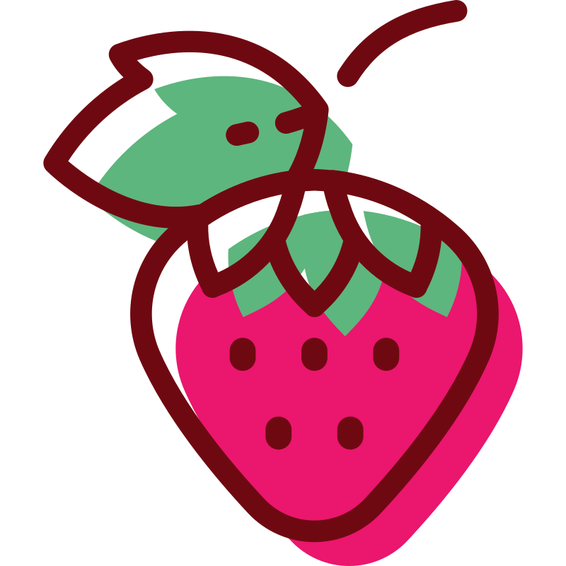
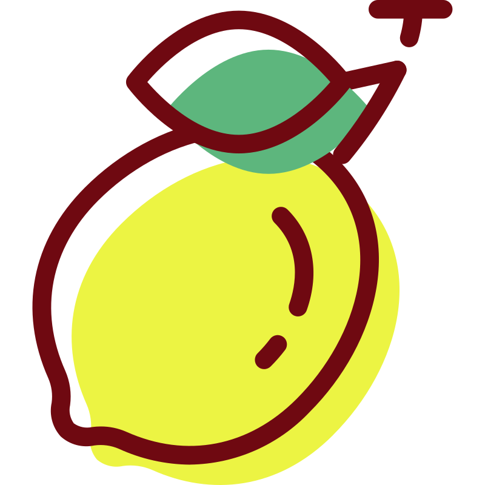
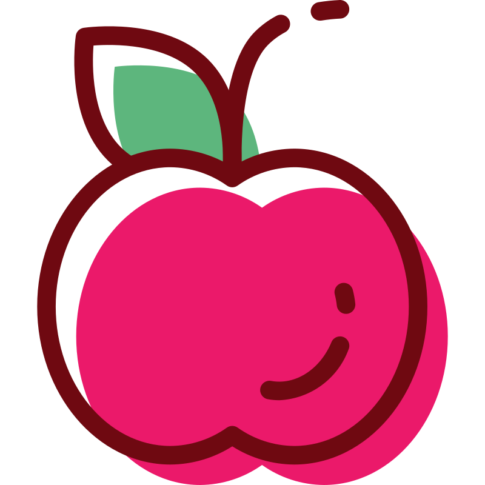

Полотно Canvas: Міні-PaintВступ
Сьогодні ми створимо власну програму для малювання мишкою — Міні-Paint, а заодно повторимо, як працюють кнопки (Button), рамки (Frame) та глобальні змінні (global):

Пригадаємо базовий шаблон вікна, з якого починається кожна програма:
from tkinter import *
window = Tk()
window.title("Mini Paint")
window.geometry("450x400")
window.config(bg="lavender")
# тут додаємо всі віджети
window.eval("tk::PlaceWindow . center")
window.mainloop()1. Віджет Canvas (Полотно)
Щоб малювати фігури, лінії або точки, у Tkinter використовують віджет Canvas (полотно):
canvas = Canvas(window, width=300, height=200, bg="lightyellow")
canvas.pack(pady=15)- На відміну від текстових полів, у Canvas ширина (width) і висота (height) задаються у пікселях.
- bg — колір самого полотна (аркуша, на якому ми будемо малювати).

Завдання 1
- Створи новий файл paint.py у VS Code.
- Створи і налаштуй головне вікно програми window.
- Додай у вікно біле полотно Canvas (наприклад, розміром 380 на 280 пікселів) і розмісти його з відступом pady.
2. Координати та малювання кружечка
Кожна точка на полотні Canvas має дві координати у пікселях — (x, y), які відраховуються від верхнього лівого кута полотна:
- Точка (0, 0) — це верхній лівий кут полотна.
- x — відстань від лівого краю полотна вправо.
- y — відстань від верхнього краю полотна вниз.
Лінія у Paint складається з багатьох маленьких кружечків, які з'являються там, де рухається мишка. Щоб намалювати кружечок з центром у точці (x, y) і радіусом 5 пікселів, використовують метод .create_oval():
canvas.create_oval(
x - 5, y - 5,
x + 5, y + 5,
fill="purple",
outline="purple",
)- Перші чотири числа задають межі кружечка навколо точки (x, y): на 5 пікселів вліво і вгору (x - 5, y - 5) та на 5 пікселів вправо і вниз (x + 5, y + 5). Якщо замість 5 взяти більше число, пензлик стане товстішим.
- fill — колір заливки всередині, outline — колір контуру.
3. Реакція на рух мишки (.bind)
Кнопки реагують на клік через параметр command. А щоб полотно реагувало на рух затиснутої мишки, використовують метод .bind():
def show_coords(event):
x = event.x
y = event.y
print(x, y)
canvas.bind("<B1-Motion>", show_coords)- "<B1-Motion>" означає «рух мишки із затиснутою лівою кнопкою».
- Функція обов'язково має приймати параметр event у дужках — через нього Python передає координати курсора мишки: event.x та event.y.

Завдання 2
- Напиши функцію draw(event), яка отримує координати мишки x та y і малює в цій точці кружечок будь-якого кольору через canvas.create_oval(...).
- Прив'яжи функцію draw до полотна за допомогою canvas.bind("<B1-Motion>", draw).
- Запусти програму і спробуй щось намалювати!
4. Очищення полотна
Пригадаємо, як створюється звичайна кнопка, яка викликає функцію:
def say_hi():
print("Hi!")
btn = Button(window, text="Click", command=say_hi)
btn.pack()А щоб повністю стерти все, що намальовано на полотні Canvas, використовують таку команду:
canvas.delete("all")Завдання 3
Створи під полотном кнопку Clear, яка при натисканні очищує все полотно.
5. Зміна кольору та гумка (Повторення: Frame і global)
Зараз наш пензлик малює лише одним кольором. Щоб колір можна було перемикати кнопками, збережемо його у глобальну змінну.
Пригадай: щоб функція могла змінити змінну, створену поза нею, використовуємо слово global:
mood = "happy"
def make_sleepy():
global mood
mood = "sleepy"А щоб розмістити кілька кнопок в один рядок, кладемо їх у рамку Frame із параметром side=LEFT:
row = Frame(window, bg="lavender")
row.pack(pady=5)
btn1 = Button(row, text="One", command=...)
btn1.pack(side=LEFT, padx=5)
btn2 = Button(row, text="Two", command=...)
btn2.pack(side=LEFT, padx=5)
Завдання 4
- Створи перед функціями змінну color = "black" (або будь-який інший початковий колір).
- У функції draw(event) заміни назву кольору в fill та outline на змінну color.
- Створи рамку Frame і розмісти в ній в один рядок (side=LEFT) 3–4 кнопки різних кольорів (наприклад, червоний, синій, зелений) та кнопку Clear. Кожна кольорова кнопка має змінювати змінну color через global.
- Додай ще одну кнопку — Eraser (гумка), яка стирає намальоване там, де проводиш мишкою.
Підказка: як працює гумка?
Гумка — це просто пензлик, який малює кольором фону полотна (наприклад, "white")!
6. Бонус: Розмір пензлика
Так само, як ми зберігаємо у змінній колір пензлика, ми можемо зберігати і його радіус (товщину):
size = 5
# Всередині draw(event):
canvas.create_oval(
x - size, y - size,
x + size, y + size,
fill=color,
outline=color,
)Завдання 5 (Додаткове)
Створи змінну size = 5 та додай дві кнопки: Small (робить розмір пензлика меншим, наприклад 3) та Big (робить розмір пензлика більшим, наприклад 12).

Кольори та шрифтиТаблиця кольорів:
| Базові кольори | Світлі (для фону) | Темні (для тексту) |
|---|---|---|
| "white" | "lightblue" | "darkblue" |
| "black" | "lightgreen" | "darkgreen" |
| "red" | "lightyellow" | "crimson" |
| "blue" | "lavender" | "purple" |
| "green" | "mistyrose" | "indigo" |
| "yellow" | "peachpuff" | "teal" |
| "orange" | "aliceblue" | "darkslateblue" |
| "pink" | "honeydew" | "chocolate" |
Таблиця шрифтів:
| Назва шрифту | Як виглядає |
|---|---|
| "Arial" | Чистий сучасний шрифт |
| "Verdana" | Широкий, легко читається |
| "Trebuchet MS" | Стильний м'який шрифт для заголовків |
| "Comic Sans MS" | Неформальний, схожий на комікс |
| "Georgia" | Елегантний книжковий шрифт |
| "Times New Roman" | Класичний шрифт |
| "Courier New" | Моноширинний (як друкарська машинка) |
| "Impact" | Дуже товстий шрифт |

Домашнє завданняЗавдання
1) Дай відповіді на питання:
1. Який віджет використовують для створення полотна для малювання?
2. Яка команда повністю очищує полотно canvas?
3. Як отримати координати курсора мишки всередині функції draw(event)?
4. Яке ключове слово потрібно написати всередині функції, щоб вона могла змінити зовнішню змінну color?
5. Як найпростіше зробити кнопку «Гумка» (Eraser) на білому полотні?